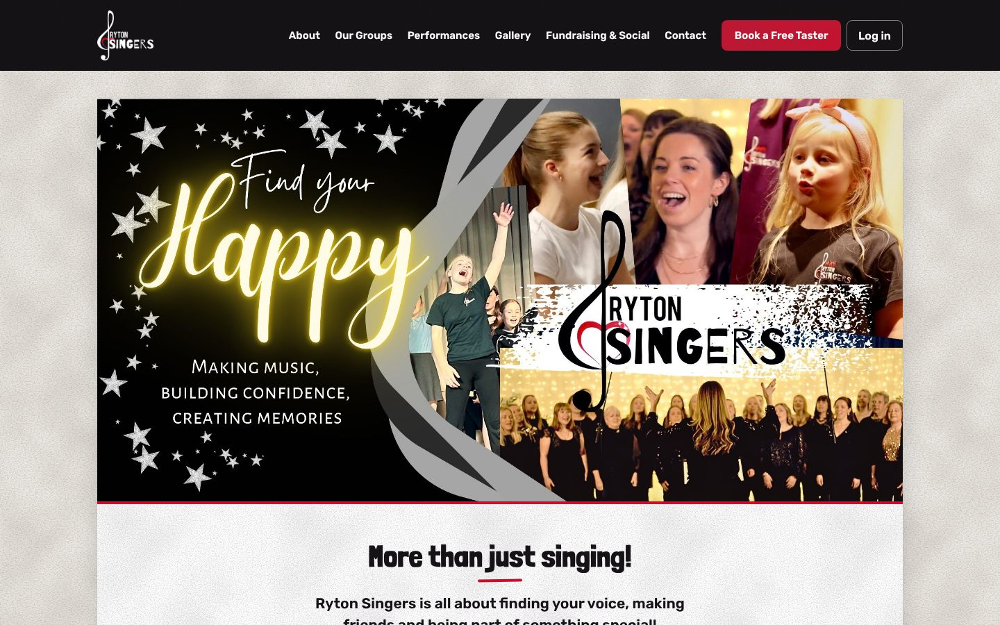
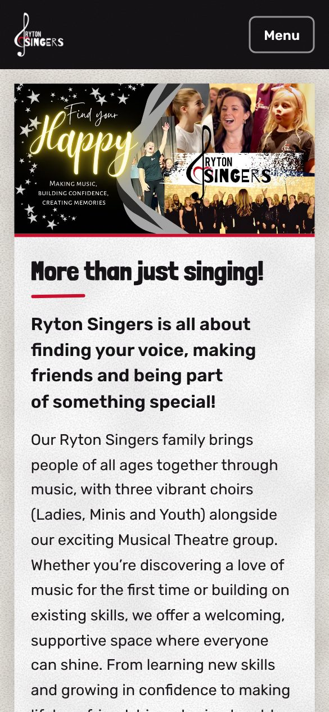

Web Design•Hosting•Cybersecurity•Communications
Capable.Connected.Considered.
Everything your business needs online, from one local team. Websites, hosting, email, domains, security and phones, looked after by real people in the North East.
Newcastle data centre
Servers racked at Reliance House, minutes from the city centre.
UK-based hardware
Everything we host runs on real hardware in the UK.
Real people
You talk to someone who knows your project, not a support queue.

“Absolutely brilliant service from Lily Paw Digital! From start to finish, the whole process was efficient, professional and completely stress-free.”
Joanna T, RytonSingers.org.uk


0333 112 7191 · lilypaw.digital
Everything we do, over the page